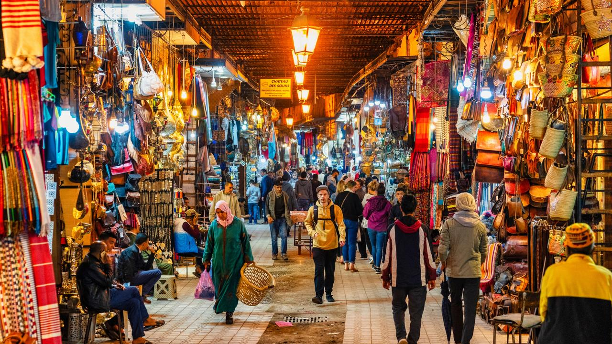

Marrakech, Maroc
Marrakech, la perle du sud du Maroc, est une ville envoûtante connue pour ses souks animés, ses jardins luxuriants et son riche patrimoine culturel. Flânez dans les ruelles sinueuses de la médina et imprégnez-vous de l'atmosphère magique de ses quartiers historiques.
Admirez la majestueuse mosquée Koutoubia qui domine le ciel de Marrakech et laissez-vous émerveiller par la beauté de la place Jemaa el-Fna, où charmeurs de serpents, marchands et artistes de rue animent la scène jour et nuit. Explorez les trésors architecturaux du palais de la Bahia, un chef-d'œuvre de l'art islamique marocain.
Dégustez les délices culinaires de la gastronomie marocaine dans les riads et restaurants traditionnels, et découvrez la romance dans l'air en vous promenant dans les jardins de la Menara au coucher du soleil. Avec ses monuments emblématiques, ses souks colorés et son ambiance chaleureuse, Marrakech est une destination où chaque coin de rue révèle une nouvelle facette de son charme envoûtant.
Informations supplémentaires :
- Population : environ 1 million
- Langue : Arabe et berbère
- Monnaie : Dirham marocain (MAD)
- Climat : Semi-aride
- Meilleure période pour visiter : De mars à mai et de septembre à novembre